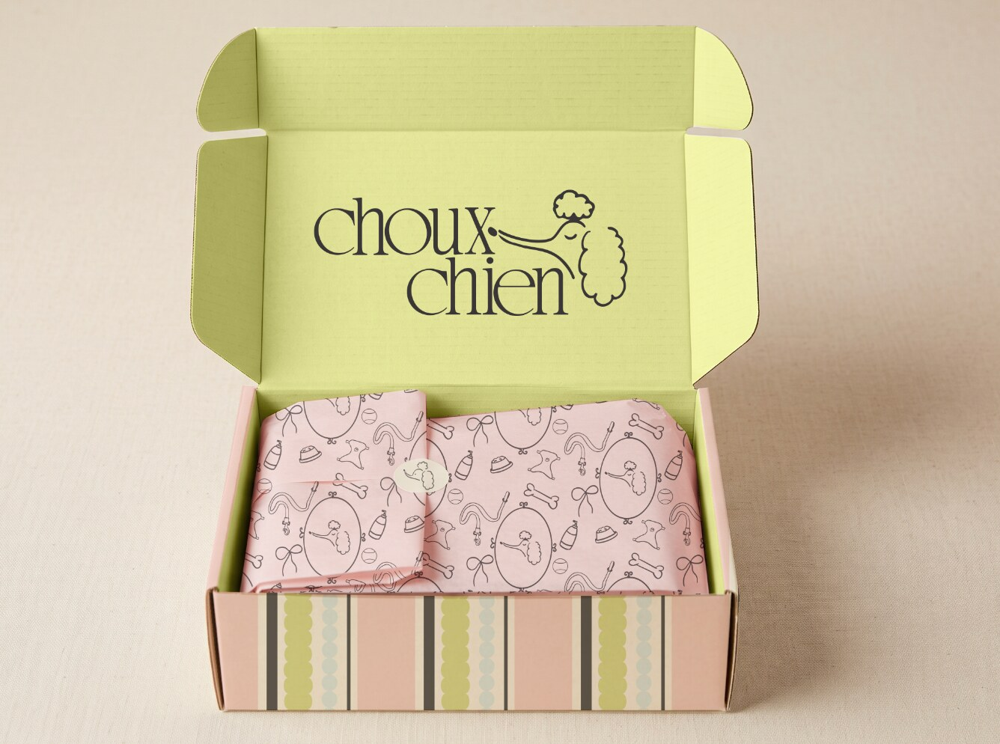
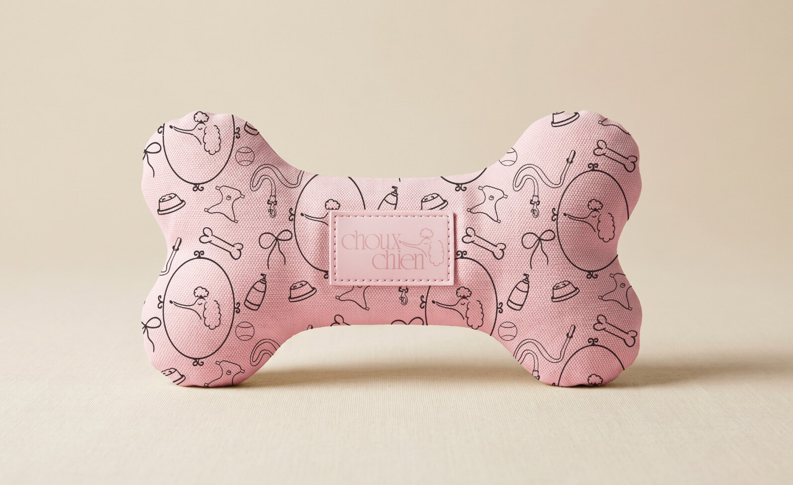
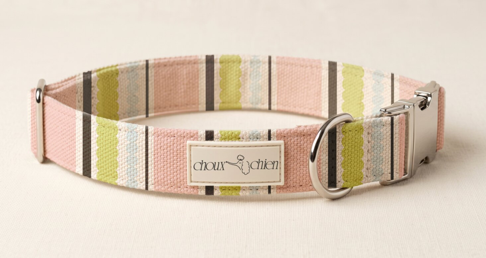
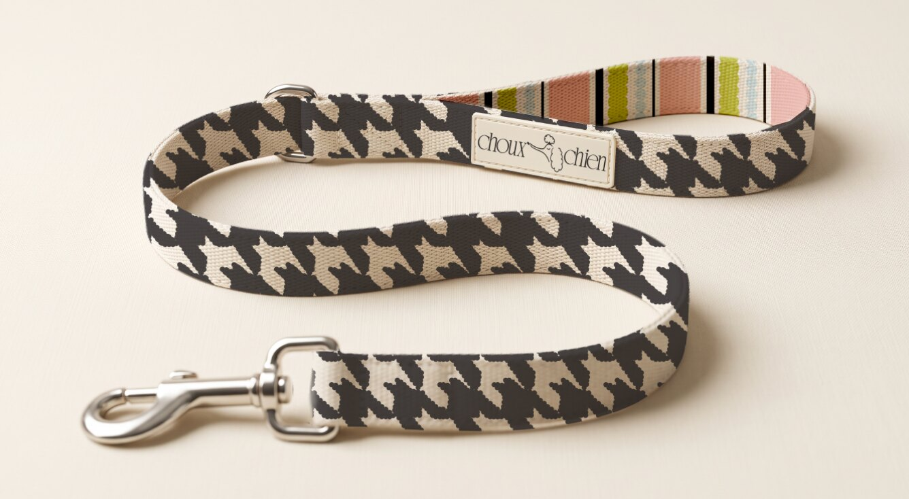
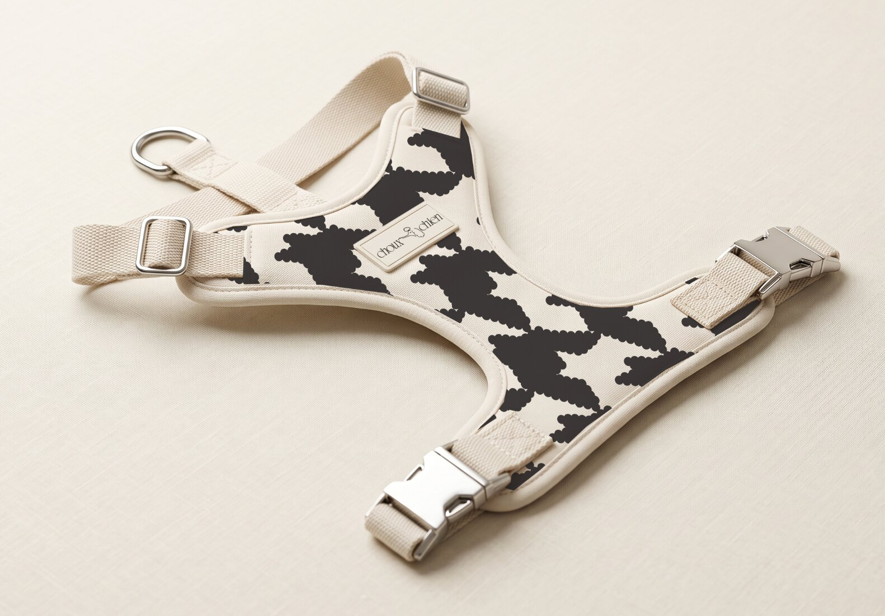
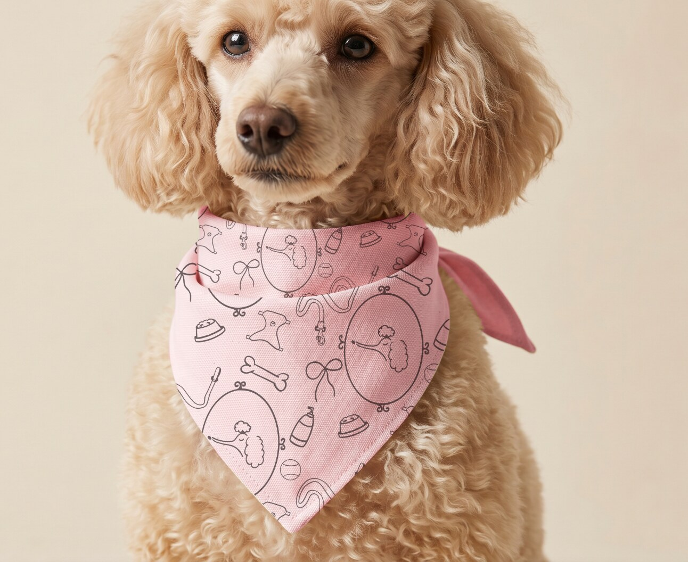
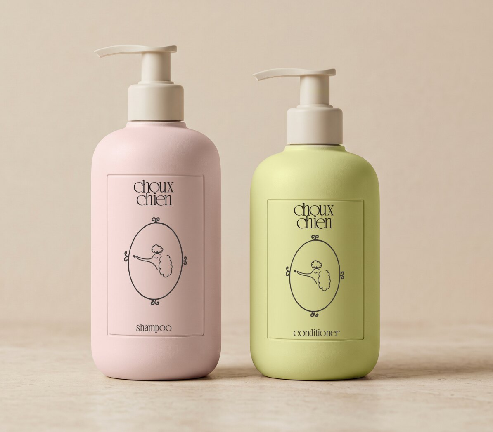
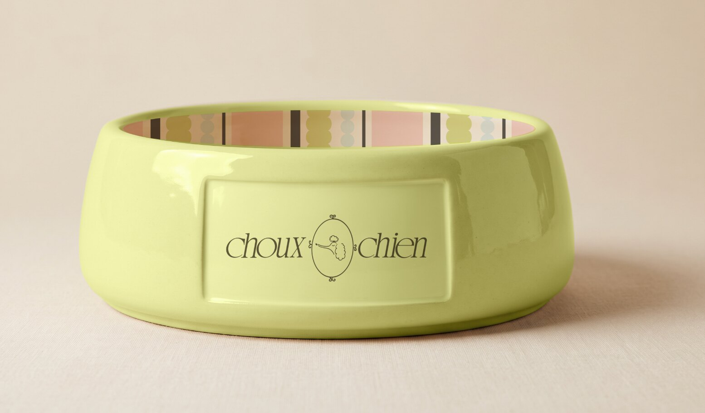

A playful-but-polished pet boutique brand concept inspired by the charm of Parisian shops and designed for dogs—and people—who treat everyday accessories like part of the outfit.
Scope
Brand strategy Visual identity Pattern design
Deliverables
Pet accessories Packaging direction Digital + retail

the project
Pet essentials, dressed up.
Choux Chien is a self-initiated pet boutique brand concept inspired by the charm and considered presentation of Parisian shops. It is built around the idea that functional pet goods can still feel expressive, collectible, and beautifully styled. The goal was to create an identity with fashion-boutique energy—playful enough for the category, but polished enough to feel like a real lifestyle brand.
The visual system pairs a refined wordmark with a poodle-inspired graphic motif, soft color, bold pattern, and a slightly unexpected mix of stripes and high-contrast shapes. Each piece feels distinct while still belonging to the same little world.







Behind the work
From boutique feeling to a full product world.
01
Setting the tone
I started with the balance the brand needed to hold: sweet but not childish, elevated but not stiff, and stylish without losing the joy that makes pet brands fun. Parisian boutique windows, specialty packaging, and fashion-led product displays helped shape the voice, palette, and overall art direction.
02
Building recognition
The identity uses a refined wordmark, a poodle-inspired motif, soft pink and muted green, and a flexible family of stripes and high-contrast patterns. The pieces can shift in scale and color while staying recognizably Choux Chien.
03
Putting it on product
I applied the system across a collar, leash, harness, bandanna, fabric bone toy, dog bowl, pet-care packaging, and shipping packaging to test how it behaves on different shapes and materials. The applications coordinate without matching exactly, giving the collection the layered feel of a small fashion line.
end of project ♡
A pet brand with its own point of view.
CHOUX CHIEN ☆ PET ACCESSORIES WITH PERSONALITY ♡ CHOUX CHIEN ☆ PET ACCESSORIES WITH PERSONALITY ♡